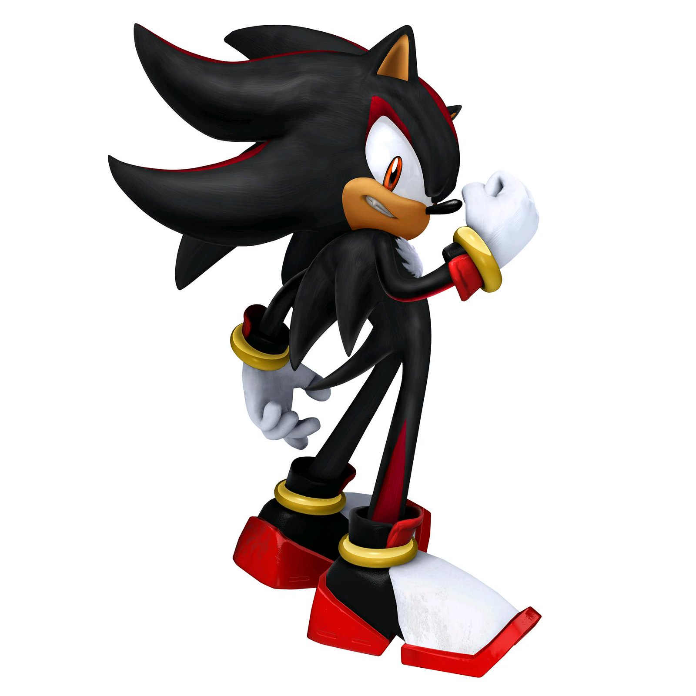

About Shadow
Shadow is the ultimate life-form and anti-hero and occaional adversary of Sonic the Hedgehog in the Sonic franchise. Created by Professor Gerald Robotnic on Prison Island to protect planet Earth from threats to the population. He has been known the save Sonic and his friends twice in the Sonic X animated series - against Gerald Robotnik's algorithm to collide the Space Colony Ark with Earth, and later saves the galaxy from the dominion of the Metarex.
Shadow the Hedgehog avatar in the Sonic 2006 game.
Shadow's Characteristics
- He has black and red fur.
- He is considered as a bad-ass hedgehog
- He completes the tasks he believes are expe ted of huim to restore his memory.
Shadow's Friends
When he's acting of his own accord, he isolates himself from his friends. However when there is a common goal, Shadow has allies. Please click on the following links to find out more about each of them in the franchise.